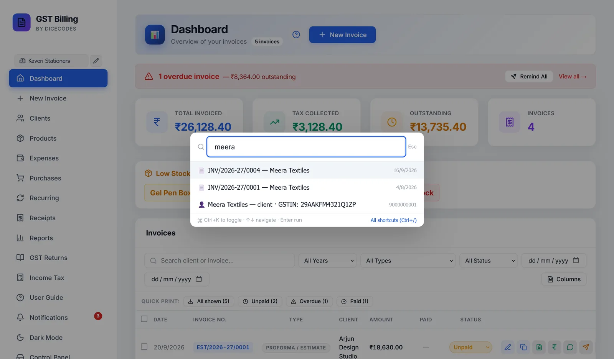

Getting around the app
The sidebar, switching business, notifications, quick search with Ctrl + K, keyboard shortcuts and dark mode.
#Support & About
Who makes the app, and how to help it grow. Free ways come first: star it on GitHub, tell another business, report a bug or ask for a feature. If you want to give money, scan the UPI QR with any UPI app, for any amount. The page also lists what OM RAJ builds for businesses: custom software and web apps, changes to this app, setup and data migration, support plans, AI integration and automation, and mobile apps.
The app stays free whatever you choose. Nothing is locked, and nothing is ever printed on your invoices. Once you have made 10 invoices, the Dashboard shows a small support card once a day; Not today hides it until tomorrow and Hide for 30 days for a month.
Scanning the QR fills in the payment note "Free GST Billing support - your business name", so OM RAJ can thank you; untick Include my business name to leave it out. The page also shows how much users have given so far and what it is going towards.
Once a month at most, a one-line note at the top of the app asks for a star on GitHub. ✕ hides it for 30 days; Star on GitHub or Already starred hides it for good. It never appears while you are making an invoice.
#Switching business
With more than one business saved, click its name at the top of the sidebar and choose another. Every screen changes to that business's invoices, purchases, expenses, receipts, recurring invoices, reports and returns. Manage profiles… opens Settings.
#Notifications
The bell shows a count of things that need you. Clicking it lists them, and clicking one takes you there:
- 🔁 recurring invoices created today
- ⚠ overdue invoices
- ⏰ invoices due in the next 3 days
- 📋 GST, TDS, TCS, advance tax and ITR dates in the next 10 days
- 📦 products low on stock
Mark all as read clears the list. Anything new brings it back. The bell counts all your businesses together.
#Quick search: Ctrl + K
Press Ctrl + K anywhere, even while typing, and start typing. You can:
- go to any screen, or start a new invoice;
- open an invoice by its number or client;
- find a client by name or GSTIN, or a product by name or HSN, which opens their list;
- jump to Settings, switch dark mode, or see what is new in an update.
Use ↑ ↓ and Enter. Esc closes it.

#Keyboard shortcuts
| Ctrl + K | Quick search |
| Ctrl + N | New invoice |
| Ctrl + Shift + L | Lock the app (when a PIN is set) |
| Ctrl + / | Show all shortcuts |
| Esc | Close a dialog |
| Enter | Confirm a dialog |
On the invoice screen there are more: see Keyboard shortcuts on this screen. On a Mac, use ⌘ instead of Ctrl.
#Dark mode
Dark Mode in the sidebar switches the app to dark colours, and Light Mode switches back. Invoices and PDFs always print in their normal colours.
#Opening it like a desktop app
In Chrome and Edge, the app may offer Install App. It then opens in its own window with its own icon, like any other program, and right-clicking the icon jumps straight to New Invoice or GST Returns. It is the same app and the same data.
#"Needs a Quick Start"
If the app's engine is not running, the page says Free GST Billing Software Needs a Quick Start. Your data is safe. Double-click Free GST Billing on your Desktop and click Open App; the page carries on by itself once it is running.